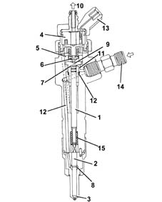
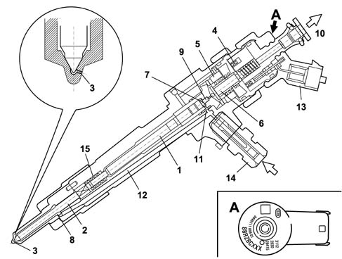
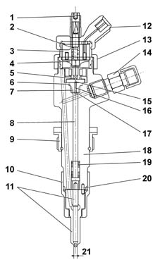
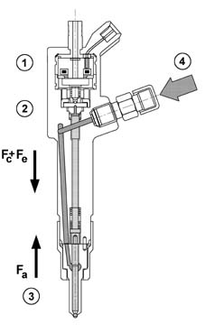
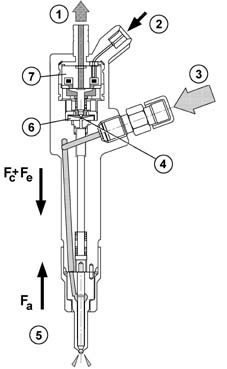
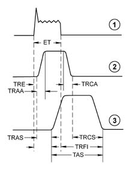

1060F injectors and lines
- Path
- Descriptions > 10 ENGINE > 1060 DIESEL FUEL INJECTION > 1060F injectors and lines
- Kind
- system description
- Applies to
- all engines; all production periods
- Interactive page
- https://sloeber94.github.io/elrnDB-fDbl/en/#/2582307
Applies to: all engines; all production periods
INJECTORS
The injectors are fitted on the cylinder head and operated by the injection control unit.
The injectors can be divided into two sections:
- actuator/nozzle consisting of a pressure rod (1), pin (2) and jet (3);
- solenoid valve consisting of a coil (4) and pilot valve (5).
The operation of the injector can be divided into three stages.
REST POSITION. The coil (4) is de-energized and the shutter (6) is in the closed position and does not allow the introduction of fuel into cylinder Fc > Fa (Fc: due to the line pressure acting on control area 7 of the rod 1; Fa: due to the line pressure acting in supply volume (8).
START OF INJECTION, the coil (4) is energized and causes the shutter (6) to be raised.
The control volume (9) fuel flows towards the return manifold (10) causing a decrease in pressure in the control area (7). At the same time, the line pressure exerts a force Fa > Fc in the supply volume (8), via the supply duct (12), causing the raising of the pin (2) with the consequent introduction of fuel into the cylinders.
END OF INJECTION. The coil (4) is de-energized and returns the shutter (6) to the closed position which recreates an equilibrium with forces which return the pin (2) to the closed position and consequently end the injection.
Applies to: all engines; all production periods
CONSTRUCTION FEATURES
The electromagnetically-controlled fuel injector is divided into 2 parts:
- solenoid consisting of coils and drive valve
- actuator/nozzle consisting of a pressure rod, pin, 6-hole jet supplied at high pressure (up to 1300 bar with atmospheric pressure recirculation)

1, Pressure rod 2, Pin 3, Jet 4, Coil 5, Valve 6, Spherical shutter 7, Control area 8, Supply volume 9, Control volume 10, Fuel return - low pressure 11, Control duct 12, Supply duct 13, Electrical connection 14, Fuel inlet connector - high pressure 15, Spring
Applies to: all engines; all production periods
IMA CLASSIFICATION
During the test stage the injector specifications are checked in different pressure/flow rate conditions. Any injectors that do not meet a certain standard are discarded; the remaining ones are classified ausing an alphanumerical code with nine digits known as an IMA code etched by laser on the top part of the magnet.
When fitted in the vehicle the control unit must memorize the individual code and if one or more of the injectors is replaced in a service situation the different code must be entered during diagnosis using the diagnostic equipment.

1 - Pressure rod 2 - Pin 3 - Jet 4 - Coil 5 - Valve 6 - Spherical plunger 7 - Control area 8 - Supply volume 9 - Control volume 10 - Fuel return - low pressure 11 - Control duct 12 - Supply duct 13 - Electrical connection 14 - Fuel inlet connector - high pressure 15 - Spring
Applies to: all engines; all production periods
OPERATION
The electromagnetically-controlled UNIJET fuel injector comprises a high-pressure supply duct and a recirculation pipe at ambient pressure.
The supply duct is connected to the rail by a pipe which can withstand the high operating pressures; the recirculation is sent to the tank.
The chamber inside the pilot valve and immediately above the actuator is called 'control chamber', and it of fundamental importance for the operation of the fuel injector.
Applies to: all engines; all production periods
SINGLE FUEL MANIFOLD PIPE
The single fuel manifold pipe (rail) is fitted on the inlet side cylinder head.
With its volume of around 20 cm3 it dampens the fuel pressure oscillations due to:
- the operation of the pressure pump
- injector opening.
The fuel pressure sensor is fitted on one side of the supply manifold, while the pressure regulator is fitted on the other side 1060G pressure pump electric control.
The (high pressure) hydraulic connections between the manifold-pump and manifold-injectors are made by means of steel pipes with an internal diameter of 2 mm and an external diameter of 6 mm.
Applies to: all engines; all production periods
Control chamber
The control chamber is a small chamber permanently supplied with line diesel through hole Z (from the German Zufluss = inlet).
The discharge from this chamber is through A (from the German Ablfuss = outlet), the opening of which is controlled by the control solenoid.
The diesel in the control volume acts at supply pressure on the upper surface of the pressure rod, with area Ac; force Fc acting on this area thus depends on pressure Pc present inside the control volume.
Applies to: all engines; all production periods
The control solenoid
The control solenoid controls the pressure in the control chamber and so determines the instant when the actuator allows introduction of fuel to commence, and the duration of introduction.
The pressure in the control chamber is determined by the opening and closure of hole A, effected by a spherical shutter which is controlled by a pilot needle ('anchor').
The pilot needle is normally held in the closed position by a spring.
When the electromagnet is energized, the force of the spring is overcome and the pilot needle rises, allowing the spherical shutter to uncover the hole A; the lifting of the pilot needle is limited by a stop which is adjustable by an adjustment screw.
The nozzle is supplied with diesel under pressure when the pressure rod-pin assembly is in the raised position.
The pressure rod-pin assembly is subject to:
a) elastic force Fe, directed in the direction of closure, generated by the spring acting on the pin; this force ensures the nozzle is sealed when line pressure drops to zero to prevent the fuel dripping into the cylinder;
b) diesel pressure Pc (present in the control volume) that acts on the upper arch of pressure rod Ac; pressure Pc generates a force Fc that also acts in the direction of closure.
c) the pressure Pa of the diesel present in the supply chamber; this acts on the area Aa of the circular ring which is delimited on the outside by the diameter through which the pin slides in the nozzle, and on the inside by the diameter of the sealing edge of the tapered seat. This pressure Pa generates a force Fa, in the direction of opening. This pressure Pa generates a force Fa, in the direction of opening.

1, Adjustment screw 2, Spring 3, Electro-magnet 4, Keeper 5, Ball plunger 6, Valve 7, Opening 'Z' 8, Pressure rod 9, Ring nut (for fitting on engine cylinder head) 10, Retaining nut 11, Nozzle 12, Connector 13, Ring nut (for fitting on I.E. casing) 14, Connector 15, Opening 'A' 16, Control chamber 17, 'Ac' 18, Body 19, Spring (Fe) 20, Locating dowel 21, 'At'
Applies to: all engines; all production periods
Injector rest position
In the rest condition, the electro-magnet is de-energized and the pilot needle is in the closed position.
In the control chamber supplied by the hole Z, the pressure Pc is equal to the line pressure, and so the forces which act in the direction of closure of the pressure rod-pintle assembly (Fc+Fe) prevail over the opening force (Fa).
Under these conditions, fuel is not inserted into the cylinder.

1, Electro-magnet 2. Two-way valve 3, Nozzle 4, High pressure diesel inlet
Applies to: all engines; all production periods
Start of injection
When the electromagnet is excited, the pilot pintle rises and hole A - with outflow cross-section greater than that of hole Z - is uncovered; the diesel in the control volume is therefore discharged because this is no longer sufficiently supplied via hole Z and pressure Pc falls.
The force Fc on the upper area of the pressure rod decreases and, when the opening force Fa becomes greater than Fc+Fe, the nozzle begins to open.
From the supply chamber, constantly refilled by the line pressure Pa, diesel begins to flow through the nozzle and the introduction of fuel into the cylinder commences.

1, Low pressure diesel recirculation 2, Electrical operation 3, High pressure diesel inlet 4, Flow hole open 5, Nozzle 6, Two-way valve 7, Electro-magnet
Applies to: all engines; all production periods
End of injection
The de-energization of the electromagnet causes the hole A to close, which in turn causes the rapid increase in pressure in the control chamber to the original value, resulting in the re-balancing of the forces acting on the pressure rod-pin.
As a result of the re-balancing of the forces, the pressure rod and pin re-descend, stopping the influx of fuel to the nozzle and so ending injection.
For a better understanding of the stages described, refer to the following diagram:

1, Current 2, Pilot needle lift 3, Needle lift
Applies to: all engines; all production periods
End of injection
a) A current is applied to the ends of the solenoid coil. This current is maintained for a time ET (Energizing Time), depending on the quantity of fuel to be injected and the supply pressure.
b) The movement of the soleniod valve pilot needle starts with a delay TRE (Energizing Delay Time) and the control chamber begins to empty.
c) The pilot needle homes at the top after a time TRAA (Pilot Needle Opening Delay Time), depending on the maximum lift, adjustable by means of a specific adjustment screw.
d) After a time TRAS (Pintle Opening Delay Time) from the start of the pilot needle's movement, the pressure rod-pin assembly starts its movement and at the same time injection commences; the time elapsing from the start of energization of the electromagnet is called TRII (Start-of-Injection Delay Time).
e) When the command to the electromagnet stops, the pilot needle starts its descent travel, which ends after a time TRCA (Pilot Needle Closure Delay Time), always dependent on the maximum lift permitted by the needle; when the pilot needle descends, the hole A closes and the control chamber fills up again. when the pilot needle descends, the hole A closes and the control chamber fills up again.
f) When the pressures are re-balanced, the pressure rod-pin assembly descends again to end the injection The following times may be distinguished: TRCS (Pintle Closing Delay Time), equal to the time elapsing between the closure of hole A and the end of injection; TAS (Pintle Opening Time), equal to the actual duration of injection, and TRFI (End-of-Injection Delay Time), calculated from the end of the electrical command.
Applies to: all engines; all production periods
Notes on the quantity introduced and the injection advance
The quantity of fuel introduced at each injection basically depends on two parameters: the duration of opening of the pintle and the pressure in the supply chamber.
The pressure in the supply volume may be considered approximately equal to line pressure; pressure drops slightly during injection due to the effect of the injection.
Since it is not possible to check and measure the pressure in the supply chamber, because of difficulties of access and the brevity of the time available, the injection pressure is assumed to be the pressure measured in the rail.
Pintle opening duration depends on electrical control duration ET (Energizing Time); the longer the energizing time, the longer the pilot pintle spends open and the longer the pintle stays open.
The actual duration of injection cannot be immediately correlated to the duration of the electrical command (later, when reference is made to the duration of injection, the duration of the electrical command, or ET - Energizing Time - will be considered), and in general the actual duration of injection is greater than the duration of the electrical command, as the End-of-Injection Delay Time (TRFI) is greater that the Start-of-Injection Delay Time (TRII).
The time lag between the electrical command and the actual injection (TRII) must be taken into consideration when calculating the injection advance; the UNIJET control system refers to the electrical command and not the actual start of injection when calculating the injection advance.
The same considerations apply to the actual end of injection, whose delay from the end of the electrical command TRFI is greater than the start-of-fuel injection delay TRII.
TRII and TRFI can be determined by appropriate tests conducted on an injector test stand.
In conclusion, to know the quantity of air introduced at each injection, a test must be conducted to determine the 'measured injector plan', i.e. the characteristic amount introduced in relation to ET at different injection pressures.